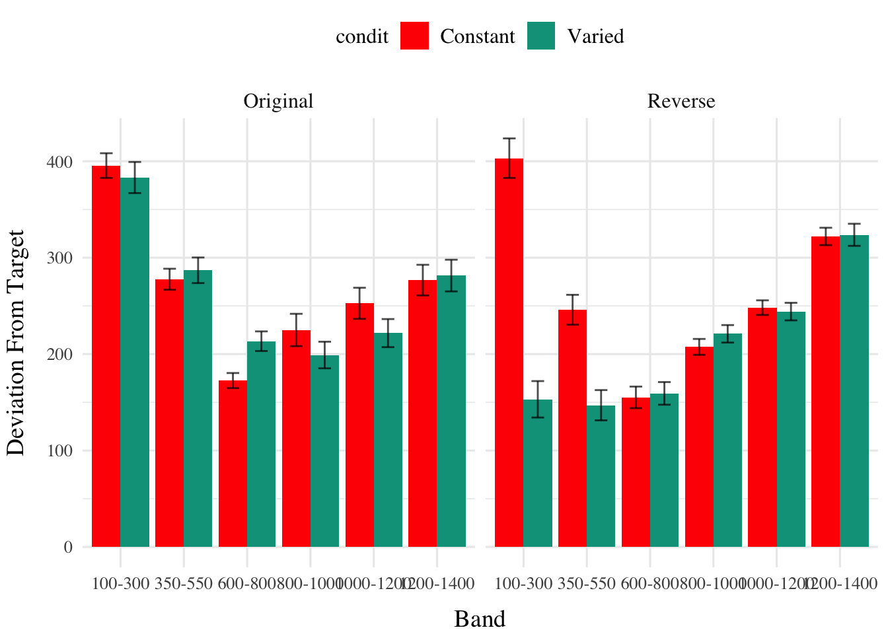
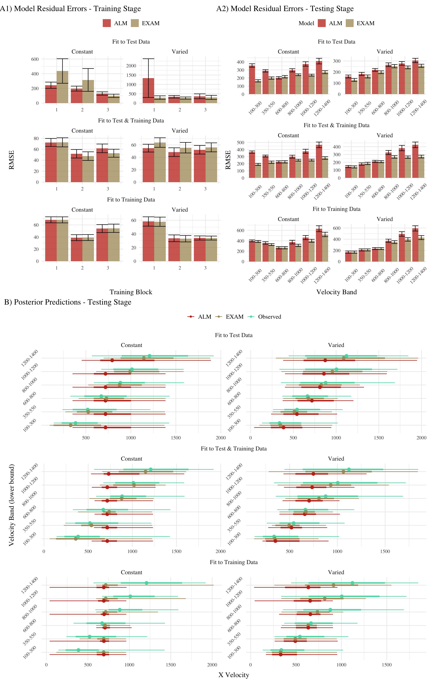
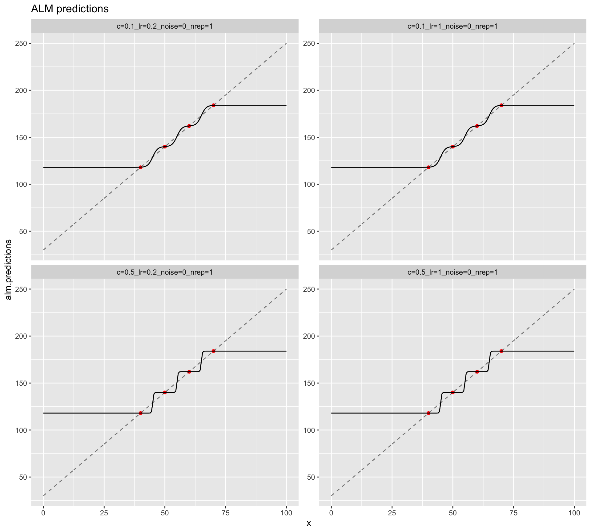

pacman::p_load(dplyr,purrr,tidyr,tibble,ggplot2, brms,tidybayes, rstanarm,emmeans,broom,bayestestR, stringr, here,conflicted, patchwork, knitr,kableExtra,ggh4x,ggpat…

pacman::p_load(dplyr,purrr,tidyr,ggplot2, data.table, here, patchwork, conflicted, stringr,future,furrr, knitr, reactable, flextable,ggstance, htmltools,…


#lapply(c('tidyverse','data.table','igraph','ggraph','kableExtra'),library,character.only=TRUE)) pacman::p_load(tidyverse,data.table,igraph,ggraph,kableExtra,DiagrammeR,…
pacman::p_load(tidyverse,here) d <- readRDS(here("data/dPrune-01-19-23.rds")) # Prepare the data for analysis dtest <- d %>% filter(expMode %in% c("test-Nf", "test…